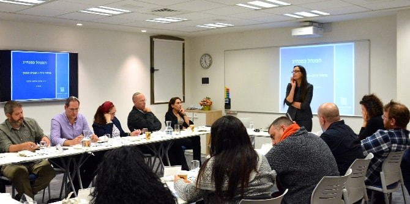

In mid-December, as part of its continuation programs for graduates, the Mandel Graduate Unit hosted an event for Cohort 25 – the most recent graduates of the Mandel School for Educational Leadership. At this event, graduates discussed personal and professional challenges that they are encountering in the organizational environment in which they are operating while they are entering their new professional positions.
Dr. Granit Almog-Bareket, director of the Mandel Graduate Unit, emphasized the distinction between management and leadership, sharpening the concepts of “role” and “position” as they relate to the Mandel approach that views graduates as leaders and entrepreneurs who realize their visions and lead change in the fields of education and society. Participants discussed Jim Collins’s article, “Level Five Leadership: The Triumph of Humility and Fierce Resolve,” which considers the different characteristics of leaders at various levels of management.
At the end of the meeting, the participants learned a method for peer sharing of management dilemmas that is based on the idea that the group as a whole is a significant resource for all its members, who can benefit greatly from each other’s professional knowledge. Participants worked in groups using the tools that they learned.
The meeting was led by Dr. Granit Almog-Bareket and Sharona Bar-Nes, a senior staff member at the Mandel Graduate Unit.

{kind=link}